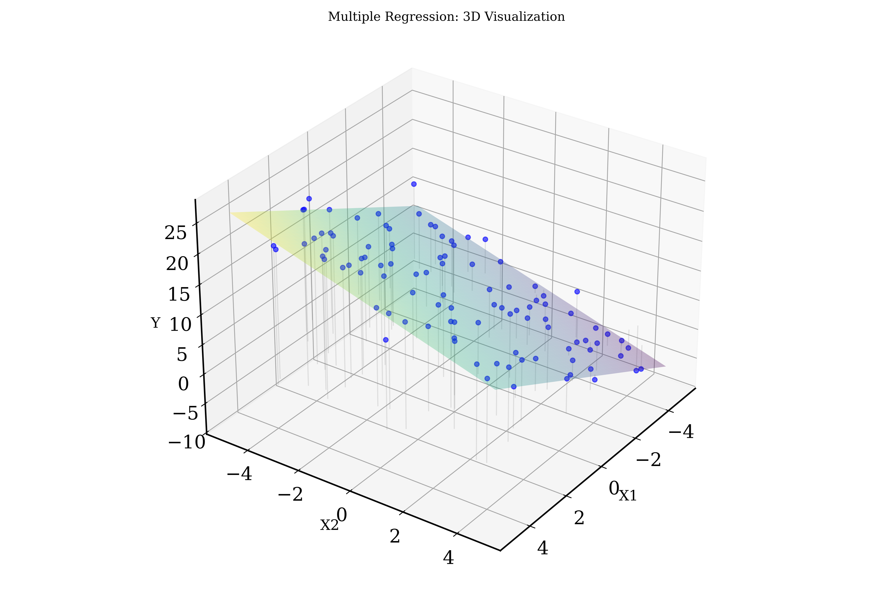
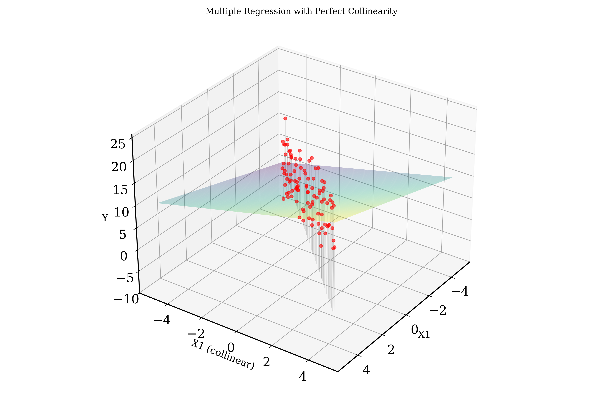

Recap Bootstrap Models
Multicolinearity and Variance Inflation Factor
Regression Methods overview
Khris Griffis, Ph.D.
PS200 Winter 2025
Lecture 15
Recap Bootstrap Models
Multicolinearity and Variance Inflation Factor
Regression Methods overview
| Feature | Resampling (x, y) Pairs | Resampling Residuals |
|---|---|---|
| Assumption on x | x values are random | x values are fixed |
| Source of variation | Entire dataset (joint x, y distribution) | Conditional distribution of errors |
| Effect on parameter variability | Captures both sampling variability and model uncertainty | Captures uncertainty in noise but not in model specification |
| Best suited for | Nonparametric settings, observational studies | Parametric regression models, controlled experiments |
Colinearity is when two or more predictor variables are highly correlated with each other.
Multiple regression with no collinearity: Fit the surface
Multiple regression with collinearity: Infinite number of solutions
VIF measures how much the variance of a regression coefficient increases due to multicollinearity
VIFj = 1/(1-Rj2)
where Rj2 is from regressing predictor j on all other predictors